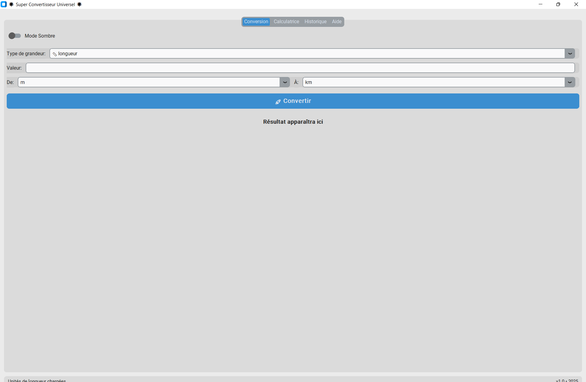
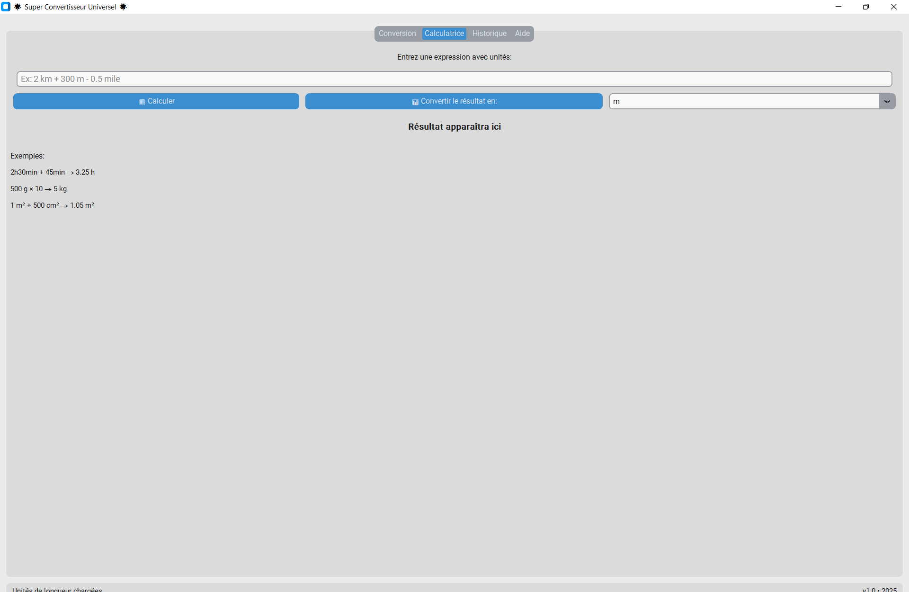
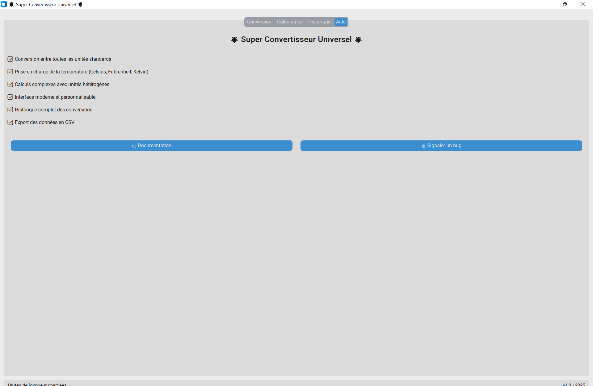

Guide d'utilisation
1. Conversion simple

Interface Page Conversion
- Sélectionnez le type de grandeur (longueur, masse, etc.) dans le menu déroulant
- Entrez la valeur à convertir dans le champ "Valeur"
- Sélectionnez l'unité source (de) et l'unité cible (à)
- Cliquez sur le bouton "Convertir"
- Le résultat s'affichera en dessous du bouton
2. Calculatrice avancée

Interface Page Calculatrice
- Allez dans l'onglet "Calculatrice"
- Entrez votre expression (ex: "2 km + 300 m")
- Cliquez sur "Calculer"
- Pour convertir le résultat, sélectionnez une unité et cliquez sur "Convertir le résultat en"
3. Gestion de l'historique

Interface Page Historique
- Allez dans l'onglet "Historique"
- Pour effacer l'historique, cliquez sur "Effacer l'historique"
- Pour exporter, cliquez sur "Exporter en CSV"
- Le fichier sera sous "historique.csv" et sauvegardé dans le dossier "data"
4. Gestion de l'aide

Interface Page Aide
- Allez dans l'onglet "Aide"
- Pour accéder à la documentation, cliquer sur "Documentation"
Interface Page Aide